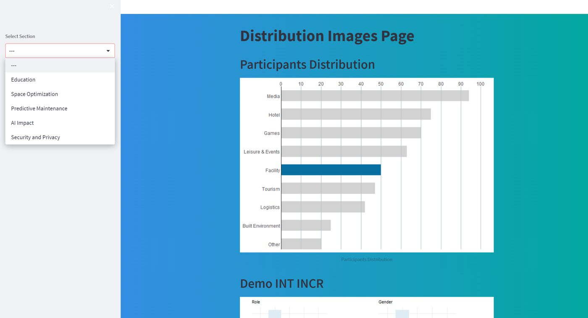
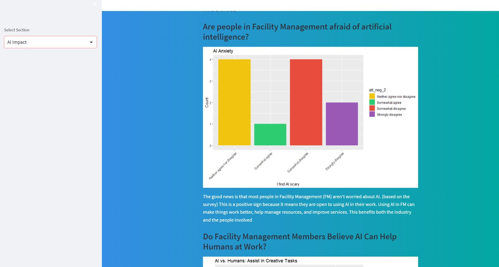

03 / the dashboard



// BUas · 2023
AI insights and recommendations for facility management
A five-person study into the impact of AI on facility management studies at BUas. We combined surveys and interviews into a research paper, policy advice, and an interactive dashboard shown at the AI at BUas conference.
As part of a five-person team, we explored how AI affects students, staff, and the organisation in facility management. Our mixed-method study combined surveys and interviews to investigate attitudes towards AI.


The project produced actionable recommendations for facility management studies at BUas and strengthened my skills as an analytics translator, bridging data and decisions.